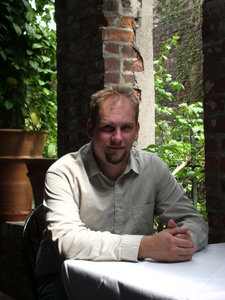
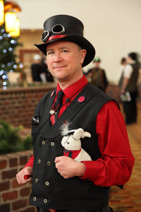
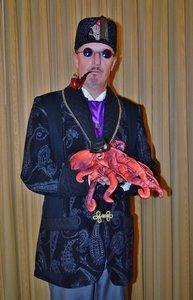
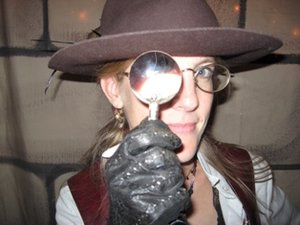

Lou J Berger
 Lou J Berger lives in Denver with three kids, three Sheltie dogs and a kink-tailed cat with nefarious intent. He’s an active member of the Science Fiction and Fantasy Writers of America, has been professionally published in short form and is writing his first novel, a non-genre YA book set in 1978’s North Carolina. His website can be found at www.LouJBerger.com.
Lou J Berger lives in Denver with three kids, three Sheltie dogs and a kink-tailed cat with nefarious intent. He’s an active member of the Science Fiction and Fantasy Writers of America, has been professionally published in short form and is writing his first novel, a non-genre YA book set in 1978’s North Carolina. His website can be found at www.LouJBerger.com.
Jessica Brawner
Jessica Brawner sprouted in the wilds of South Texas and plotted ways to spend her life traveling the world. She has been remarkably successful at that endeavor, and is now based in the Front Range region of Colorado. Twelve years ago she discovered the wonders of Science Fiction and Fantasy conventions and has spent the years since working as a booth babe, volunteering for bands and vendors at conventions all over the country. Now she has taken those experiences and written a book: Charisma +1: The Guide to Convention Etiquette for Gamers, Geeks, and the Socially Awkward.
In addition to her convention activities, Ms. Brawner has developed and taught self-defense classes, worked as an event planner, an entertainment agent, a computer teacher, and a personal assistant. Her newest ventures, in addition to her writings, are Story of the Month Club – excellent stories to your inbox (www.storyofthemonthclub.com) and Life Stats (www.lifestats.org).
Betsy Dornbusch
Betsy Dornbusch is the author of several short stories, novellas, and novels. In addition to speaking at numerous conventions and teaching writing classes, she has spent the last decade editing the online magazine Electric Spec and writing on her website Sex Scenes at Starbucks (betsydornbusch.com). She and her family split their time between Boulder and Grand Lake, Colorado.
Roberto Calas
Roberto Calas is an author and lover of history. His serial trilogy (The Scourge) is about a 14th century knight fighting his way through a demon-infested England to reunite with the woman he loves. And every bit of it is true except for the made up parts.
In addition to The Scourge series, Roberto has written The Beast of Maug Maurai (fantasy), and Kingdom of Glass (historical fiction in the Foreworld universe). He lives in Sandy Hook, Connecticut with his two children, and visits the United Kingdom on a monthly basis to be with his fiancée, Annabelle. Sometimes he fights demons to reach her.
You can learn more about Roberto on his website: robertocalas.com.
He’d be most appreciative if you liked his facebook page, too: https://www.facebook.com/RobertoCalasAuthor.
And if you feel you can only take 140 characters worth of him at a time, his twitter handle is, @robertocalas.
J. A. Campbell
 Julie lives in Colorado with her three cats, her vampire-hunting dog, Kira, her Traveler in Training, Triska, and her Irish Sailor. When she’s not out riding horses, she can usually be found sitting in front of her computer. She is the author of many Vampire and Ghost-Hunting Dog stories and the young adult fantasy series Tales of the Travelers. She’s a member of the Horror Writers Association and the Dog Writers of America Association and the editor for Steampunk Trails fiction magazine. You can find out more about her at her website: www.writerjacampbell.com.
Julie lives in Colorado with her three cats, her vampire-hunting dog, Kira, her Traveler in Training, Triska, and her Irish Sailor. When she’s not out riding horses, she can usually be found sitting in front of her computer. She is the author of many Vampire and Ghost-Hunting Dog stories and the young adult fantasy series Tales of the Travelers. She’s a member of the Horror Writers Association and the Dog Writers of America Association and the editor for Steampunk Trails fiction magazine. You can find out more about her at her website: www.writerjacampbell.com.
Sara Campbell
Sara Campbell is a Ph.D. student in physics, working in the group of Professor Jun Ye at JILA and the University of Colorado at Boulder. She works on a next-generation atomic clock that has measured time to parts in 1018. The clock is based on the natural frequency of strontium atoms, which are cooled and trapped with laser light. Then an ultrastable laser is referenced to the frequency of the atoms.
Sara did her undergraduate work at MIT, where she also built lasers and other apparatus for cooling and trapping atoms. Now she and her teammates are working on a new experiment that will use the precision of the clock to control thousands of atoms at the quantum level.
When Sara is not playing with lasers, she enjoys climbing and skiing.
For more information on research done by the Ye Group, please visit http://jila.colorado.edu/YeLabs/.
S. J. Chambers
 S. J. Chambers’ fiction and poetry has appeared in a variety of venues including Mungbeingmagazine (which is currently running her wino-fiction serial Vintage Scenes), New Myths, Yankee Pot Roast, and in anthologies such as the World Fantasy nominated Thackery T. Lambshead’s Cabinet Of Curiosities (HarperCollins, 2011), Zombies: Shambling Through The Ages (Prime Books, 2013), The New Gothic (Stone Skin Press, 2013), the Spanish Steampunk anthologies Planes B and Acronos II (Tyrannosaurus Books, 2014), and in the forthcoming Steampunk World (Alliteration Ink, 2014) and the Starry Wisdom Library (PS Publishing, 2014) collections.
S. J. Chambers’ fiction and poetry has appeared in a variety of venues including Mungbeingmagazine (which is currently running her wino-fiction serial Vintage Scenes), New Myths, Yankee Pot Roast, and in anthologies such as the World Fantasy nominated Thackery T. Lambshead’s Cabinet Of Curiosities (HarperCollins, 2011), Zombies: Shambling Through The Ages (Prime Books, 2013), The New Gothic (Stone Skin Press, 2013), the Spanish Steampunk anthologies Planes B and Acronos II (Tyrannosaurus Books, 2014), and in the forthcoming Steampunk World (Alliteration Ink, 2014) and the Starry Wisdom Library (PS Publishing, 2014) collections.
Her non-fiction has appeared at Tor.Com, Bookslut, WeirdFictionReview.com, and Strange Horizons (where she was also the Articles Senior Editor for two years). She has been nominated for a Pushcart prize, and her first book, The Steampunk Bible (Abrams Image, 2011) co-authored with Jeff Vandermeer, was nominated for the Hugo and World Fantasy award.
She can be found to blog irregularly at www.selenachambers.wordpress.com.
Bill Cherf
 W. J. Cherf is a witty, enthusiastic and engaging author, ancient historian and archaeologist, who has been there and dug that.
W. J. Cherf is a witty, enthusiastic and engaging author, ancient historian and archaeologist, who has been there and dug that.
He created and just completed the award-winning the five book Manuscripts of the Richards’ Trust series to fulfill a life-long desire: “to write books without footnotes,” and to share his love of ancient Egypt. His essential message is: “When it comes to history, there is always more ‘out there’ than meets the eye. You just have to be aware of the evidence and sensitive to the possibilities.”
Guy Anthony DeMarco
Guy Anthony De Marco is a speculative fiction author; a Graphic Novel Bram Stoker Award® finalist; winner of the HWA Silver Hammer Award; a prolific short story and flash fiction crafter; a novelist; an invisible man with superhero powers; a game writer (Sojourner Tales/D&D modules, Interface Zero 2.0 Core); and a coffee addict. One of these is false.
A writer since 1977, Guy is a member of the following organizations: SFWA, WWA, SFPA, IAMTW, ASCAP, RMFW, NCW, and HWA. He hopes to collect the rest of the letters of the alphabet one day. Additional information can be found at en.wikipedia.org/wiki/Guy_Anthony_De_Marco, GuyAndTonya.com, and GuyAnthonyDeMarco.com.
Tonya DeMarco
Tonya L. De Marco is a Costume Designer, Cosplayer, Model, and Author. She splits her time between the Ozark Mountains of Missouri and the Rocky Mountains of Colorado.
She’s been hooked on costumes and costuming since she was a preteen. Growing up reading about the wonderful characters and places created by authors such as Ursula K. Le Guin, J.R.R.Tolkein, and Frank Herbert, Tonya turned to costuming as a way to immerse herself more deeply into those fantastic worlds. Her love of the written word also encouraged her to pursue a writing career.
Tonya has over twenty years of sewing experience which includes designing and sewing numerous costumes for school plays and local theater.
Tonya cosplays across multiple genres including anime, sci-fi, steampunk, Disney, comic book, and pin-up. She attends several conventions per year across the country and enjoys meeting and talking with people about cosplay and writing. Tonya has been involved in costume contests/masquerades as both a participant and a judge—at different times, of course!
When she isn’t sewing or writing, Tonya enjoys spending time with her family, friends, and her three adopted miniature donkeys – Rogue, Storm, and Phoenix.
Sherry D. Ficklin
Sherry D. Ficklin is a full time writer from Colorado where she lives with her husband, four kids, two dogs, and a fluctuating number of chickens and house guests. A former military brat, she loves to travel and meet new people. She can often be found browsing her local bookstore with a large white hot chocolate in one hand and a towering stack of books in the other. That is, unless she s on deadline at which time she, like the Loch Ness monster, is only seen in blurry photographs. She is the author of the award winning steampunk novel Extracted, as well as many other books for young adult readers, and the co-host of Geek Chick Radio. You can find her at her website, www.sherryficklin.com.
Thomas A. Fowler
Thomas A. Fowler is a Broadcast & Digital Producer at an ad agency by day, writer of Commercial Mainstream and Science-Fiction by night. His previous credits include the feature film “The Code: Legend of the Gamers” and “The Hour Wheel,” an action-based short story published in Penny Dread Tales: Volume III – In Darkness Clockwork Shine. His website focuses on helping writers and creative artists market themselves. You can find him @ThomasAFowler on Twitter or ThomasAFowler.com.
L. J. Hachmeister
L.J. Hachmeister is a freelance writer, world champion martial artist, professional illustrator and musician originally from Chicago, Illinois. She currently resides in Denver, Colorado with her family and two rambunctious dogs.
Travis Heermann
Freelance writer, novelist, award-winning screenwriter, editor, poker player, poet, biker, roustabout, Travis Heermann is a graduate of the Odyssey Writing Workshop and the author of the Ronin Trilogy, The Wild Boys, and Rogues of the Black Fury, plus short fiction pieces in anthologies and magazines such as Fiction River’s How to Save the World, Historical Lovecraft, and Cemetery Dance’s Shivers VII. As a freelance writer, he has produced a metric ton of role-playing game work both in print and online, including the Firefly Roleplaying Game, Legend of Five Rings, d20 System, and the MMORPG, EVE Online.
He enjoys cycling, martial arts, torturing young minds with otherworldly ideas, and zombies. He has three long-cherished dreams: a produced screenplay, a NYT best-seller, and a seat in the World Series of Poker.
Jason Heller
Jason Heller is a Denver-based writer and editor. His alt-history novel Taft 2012 was published by Quirk Books, and he won a Hugo Award as a part of the editing team of Clarkesworld Magazine. He also appears in Ann and Jeff VanderMeer’s anthology The Time Traveler’s Almanac. His articles about steampunk have been published by Entertainment Weekly, NPR, and The Onion’s A.V. Club (where he’s a Senior Writer). He’s sold science fiction and fantasy short stories to numerous publications, and he wrote the official Pirates of the Caribbean tie-in, The Captain Jack Sparrow Handbook. When not writing, he hosts and curates the Science Friction film series at Alamo Drafthouse. A veteran of the punk rock scene, he lives a much quieter life nowadays with his wife on Denver’s Capitol Hill.
Van Aaron Hughes
 Van Aaron Hughes writes science fiction and fantasy short fiction. His story “The Dualist” was a winner in the Writers of the Future Contest. His fiction has appeared in The Magazine of Fantasy & Science Fiction, Writers of the Future Vol. 27, InterGalactic Medicine Show, and other publications. In real life, where people call him Aaron, he is a lawyer who has argued before the United States Supreme Court and the father of three children who are way cooler than he is.
Van Aaron Hughes writes science fiction and fantasy short fiction. His story “The Dualist” was a winner in the Writers of the Future Contest. His fiction has appeared in The Magazine of Fantasy & Science Fiction, Writers of the Future Vol. 27, InterGalactic Medicine Show, and other publications. In real life, where people call him Aaron, he is a lawyer who has argued before the United States Supreme Court and the father of three children who are way cooler than he is.
A.L. Kessler
A.L. Kessler is the author of Dark War Chronicles. She dabbles in paranormal romance, steampunk and urban fantasy. Since she was a teenager she’s loved weaving stories and spinning tales. When she’s not at the beck-and-call of the Lord and Lady of the House, two black cats by the names of Jynx and Sophie, training a playful puppy named Zelda, playing with her daughter, or killing creepers and mining all the things with her husband of 4 years, she’s either reading, participating in NaNoWriMo, or writing in her Blog Writing Rambles. For those who like things on the more spicy side of life, she leads a double life as Alexandra Webb. For more info check out www.amylkessler.com and www.alexandrawebb.net
Bill Keyes
Bill has been gaming for well over 30 years, starting with the original hardback AD&D books (which he still has, proudly showing them off to anyone foolish enough to ask) in 1980. He discovered the original Champions superhero RPG at the tender age of 11, and has been running various heroic adventures (alternating between D&D and HERO) ever since. People keep coming back to play, so he must be doing something right. A long-time resident of Colorado, he currently lives in Johnstown.
Bill has worked as the layout designer and art director for Hero Games (Lucha Libre Hero, the Hero System Bestiary, Hero System Martial Arts Handbook, Hero System Equipment Guide, and others), and Blackwyrm Publishing (Kazei 5, Terracide, The Fires of Heaven, 3rd World, and others). His first book, The Widening Gyre, is a world of steampunk and sorcery for the Hero System, and a Savage Worlds version of The Widening Gyre was released in 2014. He is also working on a sequel to The Widening Gyre as well as a Retro-Scifi worldbook for Savage Worlds, due in 2015.
Known as “The Bunny” by his fellow gamers (for reasons we are unable to explain), he claims to have been elected President in an rigged election, conquered the Midwest, been shot and killed at least once, sworn (and achieved!) vengeance on the gods themselves, crowned himself King of the World, become the arch-enemy of a llama, deposed the Pope, and had torrid love affairs with several well-known movie starlets. It is unlikely that any of these things are actually true, but it’s best to just humor him when he gets like this.
Jacqueline Koyanagi
 Jacqueline Koyanagi was born in Ohio to a Japanese-Southern-American family, eventually moved to Georgia, and earned a degree in anthropology with a minor in religion. Her stories feature queer women of color, folks with disabilities, neuroatypical characters, and diverse relationship styles, because she grew tired of not seeing enough of herself and the people she loves reflected in genre fiction. She now resides in Colorado where she weaves all manner of things, including stories, chainmaille jewelry, and a life with her loved ones and dog.
Jacqueline Koyanagi was born in Ohio to a Japanese-Southern-American family, eventually moved to Georgia, and earned a degree in anthropology with a minor in religion. Her stories feature queer women of color, folks with disabilities, neuroatypical characters, and diverse relationship styles, because she grew tired of not seeing enough of herself and the people she loves reflected in genre fiction. She now resides in Colorado where she weaves all manner of things, including stories, chainmaille jewelry, and a life with her loved ones and dog.
Terry Kroenung
After having been an Army infantry officer leaping out of perfectly-functioning aircraft, a teacher of Crips & Bloods on a wagon train, and Chuck E. Cheese (really), adding ‘author’ to the list is almost anti-climactic.
Brimstone and Lily, Jasper’s Foul Tongue, and Jasper’s Magick Corset are the first 3 books in his Legacy Stone series. They are snarky takes on traditional quest-lit. They include shape-shifting swords, drunken fire sprites riding magic cannonballs, combat pelicans, Captain Nemo’s sub, swimming trees, Viking zombies, lady ninjas, and poop monsters. Brimstone and Lily won the Bronze Medal in Sci-Fi/Fantasy at the 2010 Independent Publishers Book Awards.
Paragon of the Eccentric, a Steampunk prequel to War of the Worlds, won the 2013 Colorado Gold writing contest in September, as well as the 2012 Incite Denver contest. A teacher of Bartitsu, he demonstrates Sherlock Holmes’ martial art (an actual Victorian discipline) anywhere they’ll have him.
Paul Lell
Born and raised in and around Denver, Colorado, Paul has been telling stories (some true, some not so much) for most of his life. This trait led to an early adoption of role playing games and a life-long love of the written word. An abrupt change of career in 2007 gave him the opportunity to publish his first novel, and he’s been at it ever since; trying to outdo himself with each new book.
Currently residing in Westminster, Colorado (he never did make it far from where he began), with his family; a wife, two sons, a giant dog, and two giant cats, he writes daily, reads everything he can, and works on refining his stories, and games at all hours.
Stant Litore
An emerging voice in weird fiction, Stant Litore has published five volumes of The Zombie Bible, which retell history (and the Bible) as a series of encounters with the restless dead; the first, Death Has Come Up into Our Windows, has been translated into several languages, including Spanish and German. His debut novel was also the #2 horror bestseller on the Amazon Kindle in December 2011. His second novel won second place in the 2012 eFestival of Words Best of the Independent eBook Awards, Horror.
Litore has been a Guest at Denver Comic Con and at several Colorado conventions. He has appeared in interviews for podcasts such as ReelNerds and The Geek Port. He has been featured in “The Year’s Best New Sci-Fi” at NPR (March 2014) and as an Author Success Story on the Amazon.com homepage (November 2013).
He has also been featured in the Examiner, the Seattle Post-Intelligencer, the Huffington Post, SF Signal, and in interviews for Weird Fiction Review and Nomos. Litore was interviewed extensively on the topic of “writing characters your readers won’t forget” for Jeff Vandermeer’s Wonderbook: The Illustrated Guide to Creating Imaginative Fiction.
Besides The Zombie Bible, Litore is the author of Dante’s Heart and an ongoing scifi series, The Ansible Stories, in which future explorers become trapped in alien bodies on alien worlds. Stant Litore lives in Denver with his wife and two daughters, where he is working on his next novel.
R. Joseph Maas
R. Joseph Maas has been writing since he was 7 years old. After decades of practice, his first published work was released in March 2014. As a husband and father, he spends whatever free time is left perfecting his craft by completing chapters of the Tales of the God-Hand graphic novel series and running his own business, Watchmaker Entertainment LLC. Please feel free to follow along with that series’ development at www.facebook.com/talesofthegodhand.
Mary Anne Mohanraj
 Mary Anne Mohanraj is author of Bodies in Motion (HarperCollins), The Stars Change (Circlet Press) and ten other titles. Bodies in Motion was a finalist for the Asian American Book Awards, a USA Today Notable Book, and has been translated into six languages. The Stars Change is a science fiction novella, and finalist for the Lambda, Rainbow, and Bisexual Book Awards. Previous titles include Aqua Erotica,Wet, Kathryn in the City, The Classics Professor, The Best of Strange Horizons, Without a Map, The Poet’s Journey, and A Taste of Serendib (a Sri Lankan cookbook).
Mary Anne Mohanraj is author of Bodies in Motion (HarperCollins), The Stars Change (Circlet Press) and ten other titles. Bodies in Motion was a finalist for the Asian American Book Awards, a USA Today Notable Book, and has been translated into six languages. The Stars Change is a science fiction novella, and finalist for the Lambda, Rainbow, and Bisexual Book Awards. Previous titles include Aqua Erotica,Wet, Kathryn in the City, The Classics Professor, The Best of Strange Horizons, Without a Map, The Poet’s Journey, and A Taste of Serendib (a Sri Lankan cookbook).
Mohanraj founded the Hugo-nominated magazine, Strange Horizons, and was Guest of Honor at WisCon 2010 and Maneki Neko Con. She serves as Executive Director of the Speculative Literature Foundation (speclit.org), has taught at the Clarion SF/F workshop, and is Clinical Assistant Professor of English at the University of Illinois at Chicago.
Jody Lynn Nye
Jody Lynn Nye lists her main career activity as ‘spoiling cats.’ When not engaged upon this worthy occupation, she writes fantasy and science fiction books and short stories.
Over the last twenty or so years, Jody has taught in numerous writing workshops and participated on hundreds of panels covering the subjects of writing and being published at science-fiction conventions. She has also spoken in schools and libraries around the north and northwest suburbs. In 2007 she taught fantasy writing at Columbia College Chicago. She also runs the two-day writers workshop at DragonCon.
Jody lives in the northwest suburbs of Chicago, with her husband Bill Fawcett, a writer, game designer, military historian and book packager, and a black cat, Jeremy. Check out her websites at www.jodynye.com and mythadventures.net. She is on Facebook as Jody Lynn Nye and Twitter @JodyLynnNye.
Diana M. Pho
Diana M. Pho (Ay-leen the Peacemaker) is a scholar, activist, performer, and general rabble-rouser. She is best-known for running Beyond Victoriana, an award-winning, US-based blog on multicultural steampunk, and the oldest-existing blog on this topic. She has published academic articles on steampunk and its community and has written introductions to The Anatomy of Steampunk and Steampunk World. Future work includes articles in Like Clockwork, edited by Professors Brian Croxall and Rachel Bowser and The Steampunk User’s Manual by Jeff Vandermeer and Desirina Boskovich. She has been interviewed for many media outlets, including BBC America, the Travel Channel, HGTV, and the Science Channel; the websites Airship Ambassador, Racialicious, and NerdCaliber; and the books The Steampunk Bible, Steampunk: Reloaded, and The WisCon Chronicles Vol 5. Diana currently lives and works in New York City as an editor for Tor Books & blogs for Tor.com. You can follow her academic work on Academia.edu.
Ashley Lauren Rogers
Ashley Lauren Rogers (A.k.a Lucretia Dearfour and Madeline Foxtrot in the Steampunk Community) earned a Bachelor’s of English Literature and Theatre at Fitchburg State College, was a guest at the inaugural Women Out of Binders Academic Conference, was invited to the two week summer playwriting intensive at the Kennedy Center in Washington DC, has directed multiple plays (including the New England premier of Roberto Aguirres Sacasa’s “The Velvet Sky,” for the Falcon Players), and has written plays that have been performed in New York City, Multiple locations in MA, and as far as WI. Recently her plays “A Kiss in the Dreamhouse,” and “The Sounds of Madness,” were produced in New York City as part of Stage Left Studio’s Left Out Festival and the New York Nineteenth Century Society’s “Extravaganza,” respectively and her farce “Generation (Laz)Y” just had a premiere reading with Theatre To Go in MA. Ashley is the creator of “Ashley Rogers Does Something Awesome,” “Monthly Tea with Madeline Foxtrot,” and has been a writer on the first two seasons of “Marisa and Rocco,” all through Dogtoon Media. She has been featured in the Frenchy and The Punk Music video for “House of Cards,” Sundance Channel’s “Young Broke and Beautiful,” and TLC’s “Bling It On.” Ashley has written articles for Beyond Victoriana and Steampunk Magazine Online, has been a vlogger and a blogger for NerdCaliber.com.
Christine Rose
Christine Rose is an award-winning fantasy author, blogger & podcaster, activist, and ethical vegetarian. Her MG fantasy series Rowan of the Wood won two indie awards, and her short stories and novels under former pen name O. M. Grey won several of Steampunk Chronicle’s Readers’ Choice Awards as well. Her short fiction and poetry have appeared in various magazines, like Steampunk Trails & Tales from the Archives, and several Sirens Call Publications’ (among other various) anthologies.
As an educator, she’s taught English literature and composition in college as well as writer and social media workshops. Her nonfiction guide Publishing & Marketing Realities for the Emerging Author has help countless writers find their path, and her provocative, powerful blog posts & podcasts on sexual violence, abusive relationships, and mental illness have helped countless survivors find their voice.
Christine lives in the Pacific Northwest with her husband Ethan (co-author of the Rowan of the Wood series), her beloved boxer Buster, and Shadow, the cat. Whenever possible, she’s either enjoying a frothy mocha or hiking in the rain to see another beautiful waterfall.
She still blogs sporadically at christinerose.wordpress.com.
Christopher M. Salas
 Born and raised in Pueblo, CO., Christopher M. Salas developed a penchant for science fiction and the paranormal from his grandmother and uncle. As a child spending time with his grandmother, Juanita, included watching Doctor Who, Battlestar Galactica and Buck Rogers. His uncle Augustine would tell tales at the dinner table, recounting scenes from movies he had watched, such as Dawn of the Dead or The Exorcist. This played a key role in Christopher’s predilection for horror and science fiction. Currently residing in Colorado Springs, CO., Christopher dabbles his storytelling in various genres of fiction, such as Science Fiction, Horror, Fantasy and Steampunk. While working on the Abigail: Curses and Demons series, House on Teardrop Lane trilogy and other literary works, Christopher also is a script writer for Themis Comics.
Born and raised in Pueblo, CO., Christopher M. Salas developed a penchant for science fiction and the paranormal from his grandmother and uncle. As a child spending time with his grandmother, Juanita, included watching Doctor Who, Battlestar Galactica and Buck Rogers. His uncle Augustine would tell tales at the dinner table, recounting scenes from movies he had watched, such as Dawn of the Dead or The Exorcist. This played a key role in Christopher’s predilection for horror and science fiction. Currently residing in Colorado Springs, CO., Christopher dabbles his storytelling in various genres of fiction, such as Science Fiction, Horror, Fantasy and Steampunk. While working on the Abigail: Curses and Demons series, House on Teardrop Lane trilogy and other literary works, Christopher also is a script writer for Themis Comics.
Follow Christopher’s signings, current and upcoming projects at:
cmsalasauthor.blogspot.com and www.facebook.com/author.christopher.m.salas
LeAnna Shields
LeAnna Shields grew up in Colorado and discovered her vivid imagination at a young age.
It wasn’t until high school that she started writing as a way to relax after school. Starting with Star Wars fan fiction, she soon moved on to creating works of fiction using characters she thought up while she was supposed to be paying attention in philosophy class one day. Self publishing her first book in 2009, she is currently working on book three in her fantasy/science fiction trilogy The Alestrion Chronicles and the sequel to her steampunk adventure The Clockwork Golem.
Sherri L. Smith
 By day she works in a monster factory, at night she writes by the glow of her laptop. Sherri L. Smith is the author of five award-winning young adult novels, including the 2009 California Book Awards Gold Medalist, Flygirl—a World War II adventure the Washington Post named a best book of the year. Her latest novel is Orleans, a “cli-fi” adventure set in a future, post-disaster New Orleans where the survivors have gone tribal, separated by blood type to stem the spread of deadly disease. Sherri was a judge for the 2014 National Book Awards in Young People’s Literature and a three-time writer-in-residence at Hedgebrook, a women writers’ retreat in Washington State. She’s worked in comic books, animation and construction. Her newest book, The Toymaker’s Apprentice, is an historical clockwork fantasy based on “The Nutcracker,” in stores this fall. Learn more at www.sherrilsmith.com
By day she works in a monster factory, at night she writes by the glow of her laptop. Sherri L. Smith is the author of five award-winning young adult novels, including the 2009 California Book Awards Gold Medalist, Flygirl—a World War II adventure the Washington Post named a best book of the year. Her latest novel is Orleans, a “cli-fi” adventure set in a future, post-disaster New Orleans where the survivors have gone tribal, separated by blood type to stem the spread of deadly disease. Sherri was a judge for the 2014 National Book Awards in Young People’s Literature and a three-time writer-in-residence at Hedgebrook, a women writers’ retreat in Washington State. She’s worked in comic books, animation and construction. Her newest book, The Toymaker’s Apprentice, is an historical clockwork fantasy based on “The Nutcracker,” in stores this fall. Learn more at www.sherrilsmith.com
Karen Stollznow
Dr. Karen Stollznow is a linguist, podcaster, and writer. She writes about language, culture, and religion, and she has spent many years investigating paranormal and anomalous claims. Karen is the author of God Bless America: Strange and Unusual Religious Beliefs and Practices in the United States, Haunting America: The Truth Behind Some of America’s Most Haunted Places, and Language Myths, Mysteries and Magic. Her forthcoming books include Missed Conceptions and the novel Hits & Mrs. You can find her @karenstollznow on Twitter or www.karenstollznow.com.
Mark Stone
In college Mark majored in Journalism and minored in English. The newspaper business wasn’t for him, so he did what every good writer does: find work in a wide variety of fields that included catering, bartending, and restaurant management. After getting married, he sold Hyundais (before they became popular) and, because he lives in Colorado, Subarus. Eventually he matured enough to be able to sit down and just write.
He is the author of the critically acclaimed The Judas Line, which earned a Publisher’s Weekly starred review, and a rave from Midwestern Book Review, and the exciting urban fantasy series From the Files of the BSI series which debuted with Things to do in Denver when you’re Un-Dead.
Molly Tanzer
Molly Tanzer is the Sydney J. Bounds and Wonderland Book Award-nominated author of A Pretty Mouth (Lazy Fascist, 2012) as well as the forthcoming Vermilion (Word Horde, 2015), and Rumbullion and Other Liminal Libations (Egaeus, 2013). Her short fiction has appeared or is forthcoming in The Book of Cthulhu (I and II), Strange Aeons, and The Book of the Dead, among other places. She lives in Boulder, CO with her husband and very bad cat. She tweets @molly_the_tanz, and blogs — infrequently — at http://mollytanzer.com.
Carrie Vaughn
Carrie Vaughn is the author of the New York Times bestselling series of novels about a werewolf named Kitty, the most recent installment of which Low Midnight. She’s written several other contemporary fantasy and young adult novels, as well as upwards of 70 short stories, including the Harry and Marlowe series of steampunk stories. She’s a contributor to the Wild Cards series of shared world superhero books edited by George R. R. Martin and a graduate of the Odyssey Fantasy Writing Workshop. An Air Force brat, she survived her nomadic childhood and managed to put down roots in Boulder, Colorado. Visit her at www.carrievaughn.com.
Josh Vogt
A full-time freelance writer and editor, Josh Vogt has sold fiction to Paizo’s Pathfinder Tales, Grey Matter Press, the UFO2 & UFO3 anthologies, Intergalactic Medicine Show, and Shimmer, among others. He writes for a variety of RPG developers and his debut fantasy novel is forthcoming. You can find him at JRVogt.com or @JRVogt. He is made out of meat.
Shay West
Shay West lives in western Colorado and is author of the Portals of Destiny Series and the Adventures of Alexis Davenport Series. She has also been published in several anthologies: Battlespace (military sci-fi), Orange Karen: Tribute to a Warrior (fundraiser), Ancient New (steampunk/fantasy), and Horror in Bloom.
You can find Dr. West and more of her work at Shay-West.com.